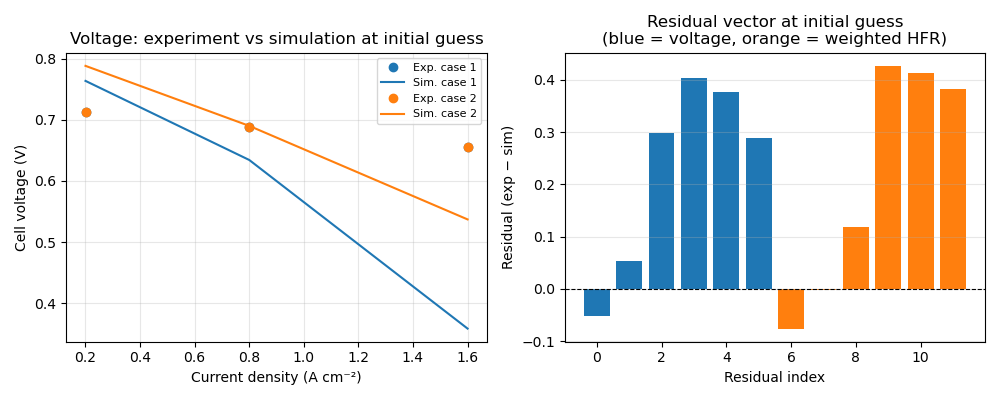
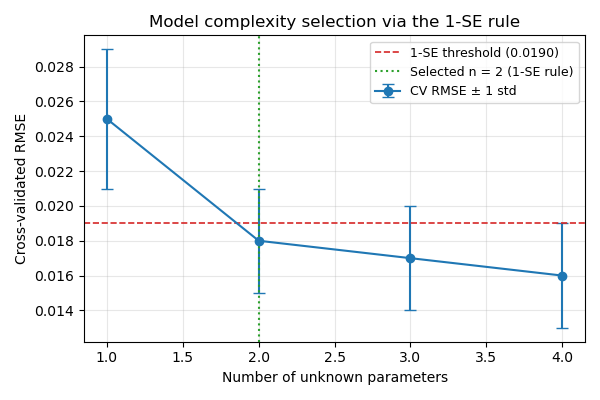

Note
Go to the end to download the full example code.
Parameter estimation#
SteadyStatePolarizationCurveCalibration
fits kinetic and transport parameters to multi-condition polarization and HFR
data. It uses scipy.optimize.differential_evolution as the global
optimiser, with k-fold cross-validation and automatic complexity selection
via the 1-SE rule.
This example sets up a synthetic two-condition calibration problem and demonstrates the full API — construction, residual evaluation, k-fold splitting, and complexity sweep — without running the full optimisation (which takes minutes on real data).
Synthetic dataset#
Two operating conditions, three current-density points each. Voltages and HFR are set to plausible constant values — in a real calibration these would come from test-bench measurements.
import numpy as np
import pandas as pd
import matplotlib.pyplot as plt
import marapendi as mrpd
from marapendi.estimation.polarization_curve_calibration import (
SteadyStatePolarizationCurveCalibration,
optimal_n_1se,
build_rmse_stats_df,
)
from marapendi.estimation.parameters import Parameter, UnknownParameter
_I = np.array([2e3, 8e3, 1.6e4]) # A/m²
conditions_df = pd.DataFrame([
{"case": 1, "cell-temperature": 353.15, "pressure-ca": 1.5e5, "pressure-an": 1.5e5,
"rh-ca": 0.50, "rh-an": 0.50, "st-ca": 2.0, "st-an": 1.5},
{"case": 2, "cell-temperature": 323.15, "pressure-ca": 2.5e5, "pressure-an": 2.5e5,
"rh-ca": 0.30, "rh-an": 0.30, "st-ca": 2.0, "st-an": 1.5},
])
experimental_df = pd.DataFrame([
{"case": c, "current-density": i, "voltage": 0.72 - 0.04 * (i / 1e4), "hfr": 5e-5}
for c in [1, 2] for i in _I
])
Cell creator#
A cell_creator callable receives the current parameter dict and returns a
FuelCell. Unknown parameters are injected
here — the calibration object calls this function each time it needs to
evaluate the model at a new parameter vector.
liq = mrpd.DarcyTransportModel(J_function_exponent=2)
def cell_creator(params):
ionomer = mrpd.PFSAIonomer(
equivalent_weight=params.get("memb-equiv-weight", 1100),
conductivity_correction=params.get("memb-cond-correction", 1.0),
)
return mrpd.FuelCell(
area=25e-4,
electrical_resistance=params.get("elec-resistance", 30e-7),
ca=mrpd.FuelCellSide(
cl=mrpd.PtCCatalystLayer(
ecsa=60e3, platinum_loading=0.4e-2, ionomer=ionomer,
reaction=mrpd.ElectrochemicalReaction(
reference_exchange_current_density=params.get("i0-c", 2.5e-4),
reaction_order=0.54, activation_energy=67e6,
reference_activity=1e5, reference_temperature=353.15,
number_of_electrons=2, charge_transfer_coeff=0.5,
),
thickness=10e-6, thermal_conductivity=0.22,
pore_diameter=40e-9, absolute_permeability=1e-13, contact_angle=97.,
two_phase_transport_model=liq,
),
gdl=mrpd.GasDiffusionLayer(
thickness=200e-6, porosity=0.6, contact_angle=120.,
effective_gas_diffusion_ratio=0.3, absolute_permeability=1e-12,
thermal_conductivity=0.5, two_phase_transport_model=liq,
),
ch=mrpd.FlowChannel(
width=1e-3, height=1e-3, length=0.1, n_parallel=20, reactant="o2"
),
has_mpl=False, thermal_contact_resistance=4e-4,
),
an=mrpd.FuelCellSide(
cl=mrpd.PtCCatalystLayer(thickness=5e-6, two_phase_transport_model=liq),
gdl=mrpd.GasDiffusionLayer(
thickness=200e-6, effective_gas_diffusion_ratio=0.3,
thermal_conductivity=0.5, two_phase_transport_model=liq,
),
ch=mrpd.FlowChannel(
width=1e-3, height=1e-3, length=0.1, n_parallel=20, reactant="h2"
),
has_mpl=False, thermal_contact_resistance=4e-4,
),
membrane=mrpd.PFSA(ionomer=ionomer, dry_thickness=25e-6),
)
Known and unknown parameters#
Parameter fixes a value.
UnknownParameter marks a parameter
for optimisation, with initial guess and bounds.
is_linear=True means the parameter is scaled linearly in [0, 1];
is_linear=False means log scaling (appropriate for parameters that span
orders of magnitude like exchange current density).
known = [
Parameter(value=1100.0, key="memb-equiv-weight"),
Parameter(value=30e-7, key="elec-resistance"),
]
unknown = [
UnknownParameter(value=2.5e-4, initial_guess=2.5e-4,
lower_bound=1e-5, upper_bound=1e-2,
key="i0-c", is_linear=False),
UnknownParameter(value=1.0, initial_guess=1.0,
lower_bound=0.1, upper_bound=20.0,
key="memb-cond-correction", is_linear=True),
]
Calibration object#
cal = SteadyStatePolarizationCurveCalibration(
conditions_dataset=conditions_df,
experimental_dataset=experimental_df,
cell_creator=cell_creator,
known_parameters=known,
unknown_parameters=unknown,
)
print("Cases: ", cal.full_case_list)
print("Unknown parameters:", cal.p_i_name)
print("Initial guess: p =", cal.p_initial_guess)
Cases: [1 2]
Unknown parameters: ['i0-c', 'memb-cond-correction']
Initial guess: p = [2.5e-04 1.0e+00]
Residuals at initial guess#
Before optimisation, compute the residual vector at the initial parameter
guess. The residual concatenates voltage and HFR errors (weighted) across
all cases, and is the quantity minimised by differential_evolution.
p0 = cal.p_initial_guess
res = cal.compute_residuals(p0)
y_exp = cal.build_y_exp_cases(cal.full_case_list)
y_sim = cal.compute_y_sim(p0)
n_pts = len(_I)
n_cases = len(cal.full_case_list)
n_voltage = n_pts * n_cases
fig, axes = plt.subplots(1, 2, figsize=(10, 4))
for j, case in enumerate(cal.full_case_list):
ds = cal.get_case_dataset(case)
i_case = ds["current-density"].to_numpy() * 1e-4
cell_j = cell_creator(cal.params)
V_sim, _, _ = cal.simulate_voltage_and_hfr(cell_j, case)
axes[0].plot(i_case, ds["voltage"].to_numpy(), "o", color=f"C{j}",
label=f"Exp. case {case}")
axes[0].plot(i_case, V_sim, "-", color=f"C{j}",
label=f"Sim. case {case}")
axes[0].set_xlabel("Current density (A cm⁻²)")
axes[0].set_ylabel("Cell voltage (V)")
axes[0].set_title("Voltage: experiment vs simulation at initial guess")
axes[0].legend(fontsize=8)
axes[0].grid(True, alpha=0.3)
axes[1].bar(range(len(res)), res, color=["C0"] * n_voltage + ["C1"] * (len(res) - n_voltage))
axes[1].axhline(0, color="k", lw=0.8, ls="--")
axes[1].set_xlabel("Residual index")
axes[1].set_ylabel("Residual (exp − sim)")
axes[1].set_title("Residual vector at initial guess\n(blue = voltage, orange = weighted HFR)")
axes[1].grid(True, alpha=0.3, axis="y")
fig.tight_layout()

k-fold cross-validation setup#
With only 2 cases the calibration uses leave-one-out CV (k = 2). In real usage with many conditions, a larger k is chosen.
cal.set_k_folds(k=2)
print("k-fold assignment:", cal.k_folds)
k-fold assignment: [[np.int64(1)], [np.int64(2)]]
Complexity sweep — subset selection#
The 1-SE rule selects the simplest model within one standard error of the best cross-validated RMSE. Here we show the API using synthetic RMSE data to illustrate the selection logic.
rmse_mean = pd.Series({1: 0.025, 2: 0.018, 3: 0.017, 4: 0.016})
rmse_std = pd.Series({1: 0.004, 2: 0.003, 3: 0.003, 4: 0.003})
n_opt = optimal_n_1se(rmse_mean, rmse_std)
threshold = rmse_mean.min() + rmse_std[rmse_mean.idxmin()]
fig, ax = plt.subplots(figsize=(6, 4))
ax.errorbar(rmse_mean.index, rmse_mean, yerr=rmse_std, fmt="o-",
capsize=4, color="C0", label="CV RMSE ± 1 std")
ax.axhline(threshold, color="C3", ls="--", lw=1.2,
label=f"1-SE threshold ({threshold:.4f})")
ax.axvline(n_opt, color="C2", ls=":", lw=1.5,
label=f"Selected n = {n_opt} (1-SE rule)")
ax.set_xlabel("Number of unknown parameters")
ax.set_ylabel("Cross-validated RMSE")
ax.set_title("Model complexity selection via the 1-SE rule")
ax.legend(fontsize=9)
ax.grid(True, alpha=0.3)
fig.tight_layout()

Total running time of the script: (0 minutes 0.125 seconds)